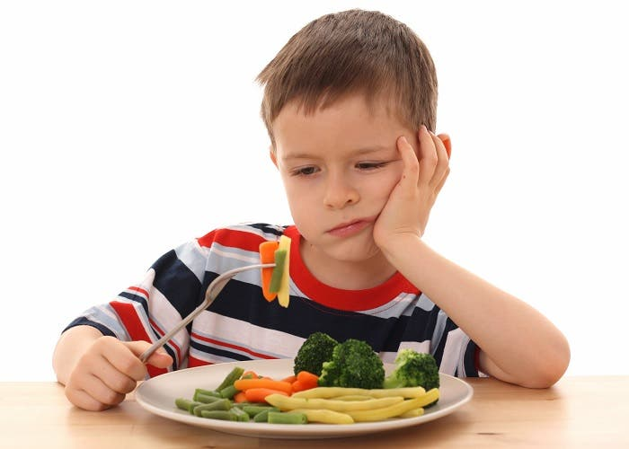
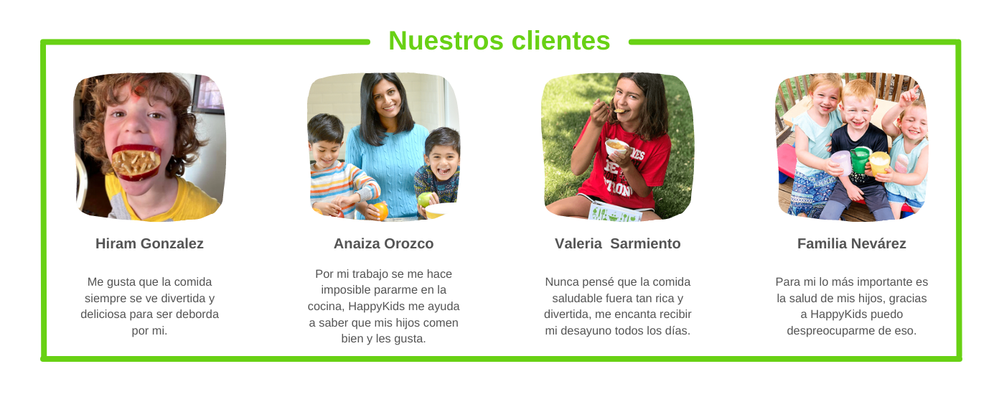

Comida saludable para niños a domicilio con los nutrientes que ellos necesitan
En ocasiones el tiempo nos excede, y entre el trabajo, los pendientes del hogar,
las horas en el tránsito y la escuela de los niños, descuidamos un poco a estos
pequeños del hogar. Un problema común es pensar qué prepararles de comer para que
se desarrollen al máximo e incluso, qué comen cuando no estamos con ellos en la
escuela.
¿Qué tal una comida saludable para niños a domicilio?
Con el plan de comida saludable para niños de HappyKids puedes quitarte esa
preocupación y estar seguro que estará ingiriendo las porciones correctas y
necesarias para que crezca, aprenda y se divierta sin problemas de salud provocados
por una mala alimentación.
Importancia

El informe de UNICEF destaca que uno de cada cinco niñas y niños menores
de cinco años en el país padece de mala nutrición, bien sea desnutrición
crónica, carencia en micronutrientes o sobrepeso y obesidad.

Permite que crezca sano y feliz
Incluye:
* Porción de verduras
* Porción de frutas
* Proteína
* Lácteo
* Snack Crocante
Conoce como estaras recibiendo el producto
Inscribete
Los planes se comienzan a entregar después de haber tenido la consulta nutricional.
Recibe sus alimentos
Recibirás tus alimentos todas los días a la misma hora y en el mismo lugar.
Disfruta sus alimentos
Tu hijo recibirá platillos diferentes todos los días, cada uno de ellos diseñado
de acuerdo a sus gustos y con los nutrientes necesarios para un sano crecimiento.
Recibe
Recibirás tus alimentos todas los días a la misma hora y en el mismo lugar.
Disfruta
Tu hijo recibirá platillos diferentes todos los días, cada uno de ellos diseñado
de acuerdo a sus gustos y con los nutrientes necesarios para un sano crecimiento.
Llegamos a las principales zonas de la QRO y el área metropolitana:
Santiago de Querétaro
La Gotera
Buenavista
Pie de Gallo
Montenegro
Santa Rosa Jáuregui
La Solana
Juriquilla
Tlacote el Bajo
El Salitre
San José el Alto
San Pedro Mártir
Sta. Maria Magdalena
San Isidro Miranda
Preguntas frecuentes
¿Qué pasa si un día no quiero que envíen mi paquete del Plan Infantil?
Puedes realizar cancelaciones con 48 hrs de anticipación sin cargo alguno hasta las 2pm.
¿Existe algún tipo de comunicación entre los repartidores de Happy Kids y suscriptores?
Además de la página de soporte de HappyKids, los suscriptores cuentan con diversos canales de ayuda por medio de la app.
¿Puedo utilizar mis propios tuppers para no usar todos los días desechables?
Si, de hecho contamos con nuestras propias loncheras y se hace un descuento del 10% por su uso y así poder reducir los desechos.